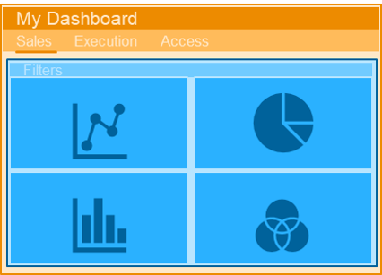
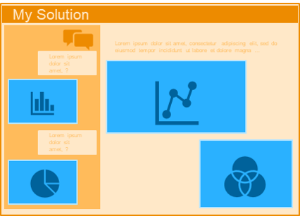
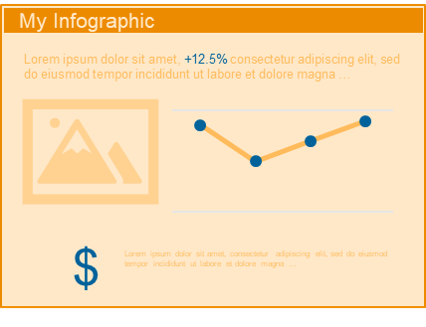

Embedded Analytics Showcase: Web Mashups
This environment shows examples of embedded analytics via web integrations and mashups for several leading Business Intelligence technologies.
Use the map below to see the different examples across common BI tools.
Level 1: Page Integration
BI apps (can be single pages) are embedded into an HTML web page with an iFrame.
Allows create a highly custom HTML navigation calling pages from different apps, allowing to maintain simpler or existing apps.
Simple to change contents (i.e. update apps) once initial framework is set up (requires front end development skills).
Best when requiring to pull pages from very diverse apps into a single entry point.
Level 2: Object Integration
Charts and other objects for the BI tool are embedded into another tool.
Allows to put BI visualizations at the point of decision / action – for instance in a chat interface or in a workflow tool.
Multiple objects from the same app interact with one-another (i.e. filtering scheme).
Complex to set up and manage.
Best for use cases that require BI visualization and calculation power but that are not dashboards.
Level 3: Data Integration
Data points (after calculations and aggregations) are called into a fully custom user interface. All visual elements are custom coded, including charts.
Highest degree of experience customization.
Complex to code (requires extensive front end development expertise) and maintain.
Best for interactive infographics that need to have their data updated regularly (but the other contents are very stable).